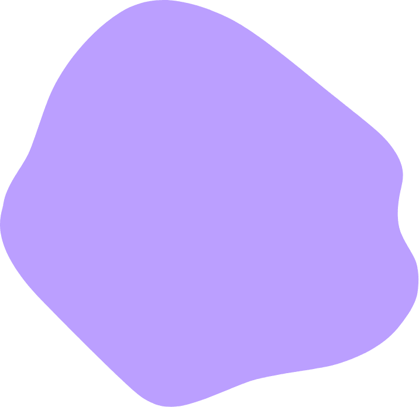
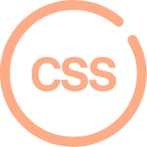

*Hello,
My NAME IS
Choyujin
- Illustrator
- Photoshop
- Adobe XD
- Html
- JavaScript
- JQuery

*About
ME
끈임없이 도전하는
웹퍼블리셔 조유진입니다
웹디자이너에서 웹퍼블리셔에 도전하기까지-
20대부터 22년 4월까지 12년 기간 동안 웹디자이너로 일했습니다.
6명 규모의 작은 회사부터 60명 규모의 강소기업까지
다양한 회사에서 다양한 실무를 경험하고 웹디자이너로서의 역량도 키웠습니다.
'시크 헤라'에서 함께 일하는 웹 퍼블리셔를 보며 코딩에 관심이 생겼고,
직접 홈페이지 디자인을 할 수 있다는 매력에 빠져
6개월 과정의 NCS를 결석 1번 하지 않고 성실하게 수료하였습니다.
웹디자이너가 틀 안에 사진을 편집하고 다루는 일이라면,
웹퍼블리셔는 사진 밖의 틀까지 디자인까지 할 수 있는 일이라 생각되어
코딩의 매력에 쉽게 빠졌습니다
웹디자이너에서 웹퍼블리셔로 새로 시작하는 저의 선택이 어려운 부분도 있겠지만
그때마다 좌절하지 않으며 저의 선택이 직업의 전환이 아닌,
직업의 확장으로 저를 더 성장시켜 줄 것임을 저 스스로 믿어 의심치 않습니다
웹퍼블리셔로서의 역량을 발휘할 수 있는 기회를 주신다면
최선을 다해 도전해 보고 싶습니다.
생년월일
학력
경력
자격증
1985년 06월 28일
2004년 02월 배화여자고등학교 졸업
2006년 02월 신흥대학 졸업
2023년 01월 NCS 수료
2008년 07월~ 2010년 04월 여성의류쇼핑몰 '아덴'
2010년 06월~ 2012년 05월 여성의류쇼핑몰 '저스트원'
2012년 10월~ 2018년 08월 10대쇼핑몰 '소녀나라'
2020년 02월~ 2021년 09월 여성의류쇼핑몰 '시크헤라'
2021년 09월~ 2022년 04월 스포츠의류브랜드 '아키클래식'
GTQ 1급 자격증 ( 2020년 3월 취득 )
*MY
Interesting
THING
제가 좋아하는 것들에 대해 적어봤습니다.
StoryTIMELINE
다사다난했던 저의 인생을 타임라인으로 만들어보았습니다.
-
Brith
00년 6월 초여름, 서울 동대문구에서
눈이 똘망 똘망한 호기심이 많은 막내 딸의 탄생! -
Student
조금은 개구진 모습의 활기찬 어린이 조유진의
파란만장 학생시절 스타트! -
Graduation
초등학교, 중학교, 고등학교, 대학교를
무사히 마치고, 성인으로서의 한걸음! -
Go To Work
대학을 졸업하고, 취업에 성공하여
웹디자이너의 경력의 시작! -

Trip To Europe
긴 회사생활 끝에 더 넓은 세상을 보려고
혼자 힘으로 준비하고, 다녀온 유럽배낭여행! -
Return
여행 후 재취업에 성공하여,
다시 직장인으로서의 생활 시작! -
License
현실에 안주하면 안되겠다는 생각에
포토샵 GTQ자격증 취득! -
NCS 수료
웹디자이너 경력을 뒤로 하고 NCS과정을 야심차게 시작!
성실하게 6개월의 과정을 마무리하였습니다

-
Adobe Photoshop
사진 보정, 상세 페이지,
사진과 폰트 배열을 기본으로 둔 배너 작업 등
10년간의 웹디자이너의 경력으로
포토샵은 능숙하게 다룰 수 있습니다. -

Adobe Illustrator
기본적인 툴은 모두 숙지 하여 사용이 가능하며
명함디자인, 배송안내 출력물을 비롯하여
일러스트의 가장 중요한 펜툴을 사용하는
아이콘 작업, 일러스트 펜툴 작업이 가능합니다. -

Adobe XD
포토샵과 같은 프로세스로
NCS 수업을 통해서 빠르게 습득했으며,
HTML로 작업 전 미리 페이지를 확인 할 수 있는
모든 퍼포먼스 구현 가능합니다. -
Adobe Lightroom
평소 사진 찍는 것을 좋아하여
사진보정에 관한 관심이 생겨 업무외적으로
스킬을 쌓아 사진톤보정, 빈티지보정등
사진보정 작업이 가능합니다. -
Visual Studio Code
Visual Studio Code 프로그램을 사용하여
박스 구조의 HTML 원리를 이해하고
다양한 사이트의 클론 코딩을 통해서
각 상황에 맞는 구조로 빠르게 구축 할 수 있습니다. -

Cascading Style Sheets
HTML로 구축을 하고,
CSS로 다양한 디자인을 할 수 있으며,
다양한 사이트의 클론 코딩을 통해서
스킬을 쌇았습니다. -
JavaScript
gnb 안에 숨겨진 메뉴를 적용할 수 있으며,
슬릭을 활용하여
슬라이드, 애니메이션, 스플리팅등
다양한 액션을 적용할 수 있습니다. -
JQuery
gnb 안에 숨겨진 메뉴를 적용할 수 있으며,
슬릭을 활용하여
슬라이드, 애니메이션, 스플리팅등
다양한 액션을 적용할 수 있습니다.